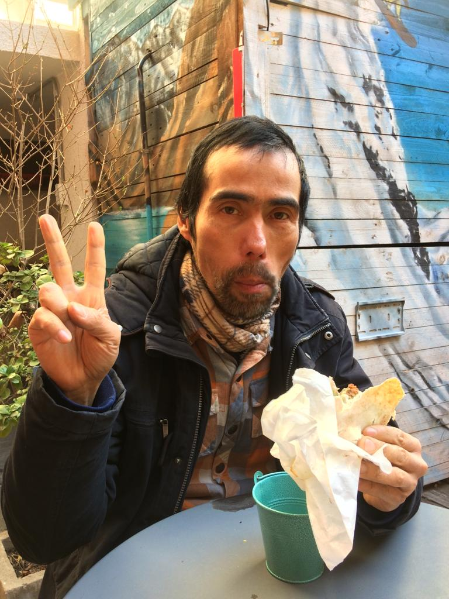

Pastiempos e intereses
Dentro de lo que es permitido contar publicamente, puedo mencionar que me encanta andar en bicicleta y que ciertamente, es uno de mis deportes preferidos, sobretodo por la extraoridnaria sensación de libertar que brinda (además de un estupendo ejercicio para el cuerpo).
También me agrada ver películas de varios géneros, como ficción, spaggetti western, cine arte, documentales (de historia, ciencias) y otros similares.
Me agrada estudiar de vez en cuando algo de matemática (de nivel superior), sobre todo la vinculada a los fenómenos físicos para tratar de entender el comportamiento de la naturaleza.
A pesar de estos pequeños gustos y entretenciones, sin duda que el pasatiempo que más tiempo y agrado me da, es el ajedrez, a cuyo estudio he dedicado no pocas horas en mi vida.
Estudio sus facetas a través de las partidas de los grandes jugadores actuales y pasados.
Me apasiona por el simple hecho de desafiar al intelecto humano y también el que no conozco a ningún ser humano capaz de entenderlo a cabalidad ya que su orden de dificultad es demasiado grande para nosotros. Es sencillamente un juego fascinante.